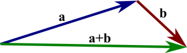
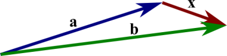
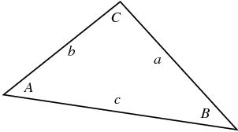
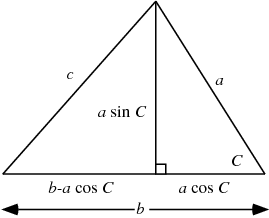

Bu yazıda ileride hocanın tam değinmediği konuları tanıştırmaya uğraşacağız.
Vektörler
Bir vektör bir yön ve büyüklüktür, başlangıç noktası olarak genellikle orijin kabul edilir. 1,2, ya da daha fazla boyutta bir sayı listesi ile gösterilebilir, tek boyutta ise bu tabii ki bir skalar ile aynı şeydir [5].
Toplamak
İki boyutta bir örnek görelim, iki vektör $a,b$ var, toplamları

Toplam sanki birinci vektörü alıp diğerinin bittiği yerden başlatmak gibi, varılan yeri gösteren yeni vektör toplam vektörüdür. Çıkartmak ise aynı yerden başlayan iki vektörde birinin sonundan diğerine sonuna giden vektörü bulmak gibidir. Aslında toplam üzerinden çıkartma doğrulabilir, $a-b$ düşünürken $-b$ diye yeni bir vektör yaratırız (yani vektörü tersine çeviririz) ve $a+(-b)$ ile toplam işlemini yaparız.
Çıkartmak

Kosinüsler Kanunu (Law of Cosines)
Şöyle bir üçgen olduğunu düşünelim [1],

Eğer, mesela C'nin 90 derece olduğunu bilseydik, Pitagor kuralından
$$ c^2 = a^2 + b^2 $$
diyebilirdik. Ama $C < 90$ ise, farklı bir formül kullanılabilir,
$$ c^2 = a^2 + b^2 - 2 a b \cos C $$
Eğer $C=90$ ise $\cos(90) = 0$ olduğu için Pitagor kuralını elde ettiğimizi görürüz.
Üstteki kurala Kosinüsler Kanunu denir, ispatı şöyle,

Üstteki üçgene bakarsak,
$$ c^2 = (a \sin C)^2 + (b-a\cos C)^2 $$
$$ = a^2 \sin^2 C + b^2 - 2 a b \cos C + a^2 \cos^2 C $$
$$ c^2 = a^2 + b^2 - 2 a b \cos C $$
Noktasal Çarpım
Kaynaklar
[1] https://mathworld.wolfram.com/LawofCosines.html
[2] https://tutorial.math.lamar.edu/classes/calcii/dotproduct.aspx